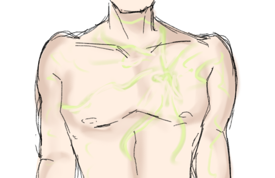

C!Mudder was raised in a close-knit community, born to a caring family, and spent his days helping fellow villagers. Tragedy struck when their village was attacked, and C!Mudder was fatally wounded in the battle. His father, consumed by grief and rage, avenged his son by slaughtering the enemy combatants.
That evening, the villagers gathered to perform a ritual, hoping to bring C!Mudder back to life. They used a Totem of Undying and offered prayers to their deity, believed to be a god of life. C!Mudder's father placed the totem at his son's wound, and the villagers prayed fervently. Suddenly, a bright yellow-green light overwhelmed everyone, and C!Mudder's body floated into the air, surrounded by smoke. He was successfully revived.
However, their deity was not who they thought. The god, "the dark one", was actually the god of death. The revival came at a terrible cost: C!Mudder was granted immortality, forever locked in a pact with Reaper. This immortality was a curse; C!Mudder could not die and was destined to live and see everyone he loved perish, an eternity of witnessing loss and despair.
Worse still, the god took control over C!Mudder, using him to wreak havoc upon the very villagers who had brought him back. Under Reaper's malevolent influence, C!Mudder became an instrument of chaos and destruction, turning against his own people. The villagers, realizing their grave mistake too late, were powerless to stop the devastation. Bound to Reaper's will, C!Mudder's immortality became a relentless torment, a reminder of the god's cruel deception. The villagers' chants now rang hollow, a chilling echo of their folly, as Reaper watched with cold amusement.
the ritual left him with scars on his chest. the scars are green due to the totem of undying.
when he revived he went from age 13 to age 24
After the Havoc, thte god gave back control. He uses cMudder more for amusement than to control and also use it as a bridge to see the overworld.
Revival cooldown depends on how grave the injuries are. His body needs time to heal
He is really old and does age, but when he dies he goes back to age 24, because that is his prime